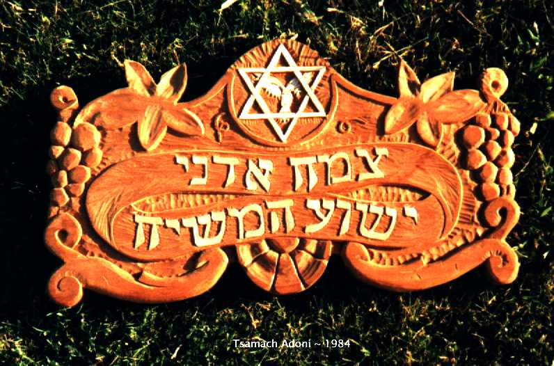

Wood Carvings

1983-TsAd.jpg - this sign was done for a Messianic Jewish fellowship named Tsamach Adoni or Branch of the Lord (second line: Yeshua HaMeshiach. It was executed in clear heart redwood.